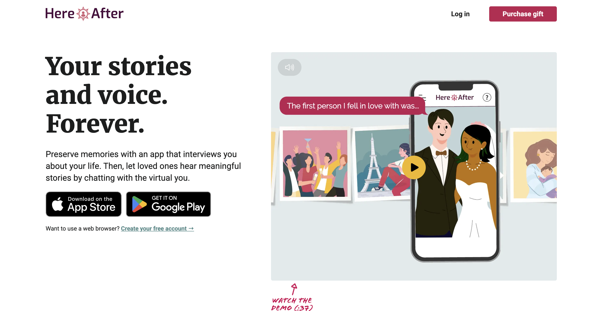
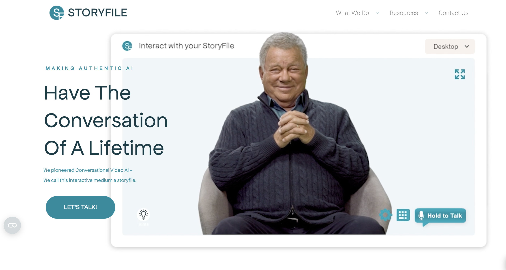
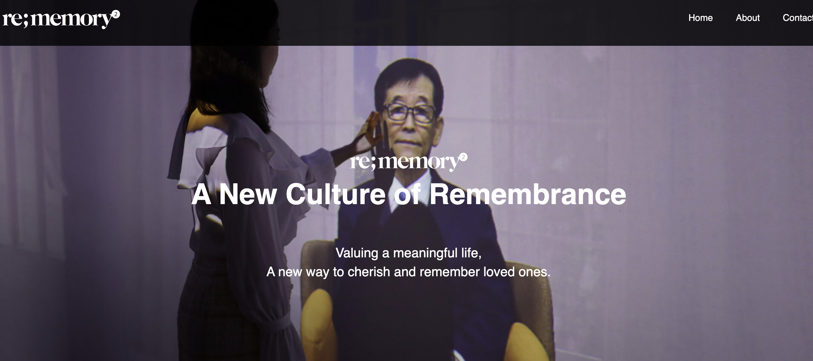

Home
Landing
Portfolio Page
About
Contact
Home
Concept
Technology
Industry Overview
Case Studies
Creative Works
Academic Research
Emotional Impact
Ethical Questions
Responsible Use
Industry Overview: Where the Digital Afterlife Is Headed
The idea of talking to someone after they've passed away used to belong in science fiction—but now, it's becoming part of real life. From AI chatbots and voice clones to holograms and virtual reality, the digital afterlife industry is growing fast. Startups around the world are using advanced technology to help people remember, reconnect, and even have conversations with lost loved ones. In this section, we explore the companies leading the way, the latest innovations, and where this rapidly evolving industry might be headed in the future.
HereAfter AI
HereAfter AI enables users to create AI-powered chatbots of deceased loved ones by uploading digital archives like emails and audio recordings. Founded by James Vlahos, inspired by his "Dadbot" project, the service allows interactive conversations through smartphones or voice assistants, preserving personal stories and memories for future generations.

StoryFile
StoryFile uses AI to produce interactive video avatars of individuals before their death. Users record responses to various questions, creating a digital presence that can engage in conversations posthumously. Promoted by figures like William Shatner, StoryFile focuses on preserving authentic personal narratives without generating new content.

Re;memory
Re;memory by DeepBrain AI offers a service to create lifelike digital avatars of deceased loved ones. By providing a photo and a short audio clip, users can generate an AI avatar that mimics the appearance and voice of the departed, facilitating virtual reunions for grieving families.

You, Only Virtual
You, Only Virtual focuses on recreating personal relationships by analyzing text messages and phone calls to build AI chatbots that replicate the deceased's voice and personality. The service emphasizes mental health support, collaborating with clinical psychologists to ensure responsible usage and user well-being.
Seance AI
Seance AI offers brief, one-time interactions with AI versions of deceased loved ones. Designed as a temporary emotional processing tool, it provides users an opportunity for closure by facilitating final conversations, without encouraging prolonged digital connections.